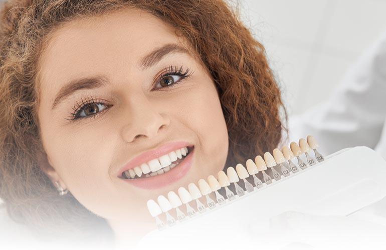
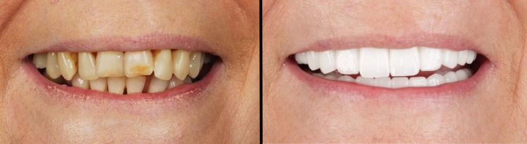

Zirkonkronen in Antalya, Türkei: Die perfekte Kombination aus Stärke und Ästhetik
Zirkonkronen in Antalya gewinnen zunehmend an Bedeutung in der zahnärztlichen Erneuerung, da sie Haltbarkeit mit einer natürlichen ästhetischen Wirkung vereinen.
Zirkonkronen haben sich als moderne Alternative zu traditionellen Zahnkronen etabliert. Diese Kronen, die das Element Zirkoniumoxid enthalten, sind extrem langlebig und biokompatibel. Es ist eine Methode, die häufig von Personen bevorzugt wird, die eine dauerhafte, natürlich aussehende Lösung für weiße Zähne und ein ästhetisches Lächeln suchen.
INHALT
- Entwicklung der Zirkonkronen
- Was ist eine Zirkonkrone?
- Vorteile von Zirkonkronen
- Zirkonkronen-Behandlung in Antalya: Schritt für Schritt
- Kosten einer Zirkonkrone in der Türkei
- Für wen sind Zirkonkronen geeignet?
- Herstellung von Zirkonkronen in der Türkei
- Lebensdauer von Zirkonkronen
- Häufig gestellte Fragen zu Zirkonkronen in Antalya
Technologische Fortschritte in der Zahnmedizin heben das Niveau der Mundgesundheit und Ästhetik kontinuierlich an. Zirkonkronen gehören zu diesen Innovationen und bieten eine ideale Kombination aus Haltbarkeit und ästhetischer Qualität.
In diesem Artikel beantworten wir häufig gestellte Fragen zu Zirkonkronen und geben umfassende Informationen über deren Herstellung, Lebensdauer und die Eignung für unterschiedliche Patientenbedürfnisse.
Entwicklung der Zirkonkronen
Bei der Auswahl von Zahnkronen ist es entscheidend, biokompatible Materialien zu verwenden. Bis in die 1980er Jahre wurden meist biodentale Kunststoffe auf Metallbasis verwendet, später ging man dazu über, Porzellan auf Metall als bevorzugte Lösung zu nutzen.
In den letzten 30 Jahren gewannen porzellanbeschichtete Kronen mit einer metallischen Unterstruktur an Beliebtheit. Doch das in der Unterstruktur verwendete Metall kann bei einigen Menschen allergische Reaktionen auslösen und ästhetische Probleme wie Zahnfleischverfärbungen verursachen.
In den 1990er Jahren verlagerten sich die Bemühungen daher hin zu vollkeramisch verstärkten Materialien. Die Herstellung einer stabilen und ästhetischen Unterstruktur gestaltete sich jedoch ohne metallische Grundlage als Herausforderung – besonders bei anspruchsvolleren Anwendungen wie Zahnbrücken.
Hier kamen Zirkonium-Unterstrukturen ins Spiel, die metallische Materialien zunehmend ersetzten. Zirkonium bietet nahezu die Haltbarkeit von Metall und ermöglicht eine ästhetisch ansprechendere und gut verträgliche Lösung für Zahnkronen.
Was sind Zirkonkronen?
Zirkonkronen, auch als „Zirkonveneers“ bekannt, bestehen aus Porzellan auf einer Zirkonium-Unterstruktur. Im Gegensatz zu herkömmlichen, metallgestützten Porzellankronen bieten sie ästhetische und langlebige Ergebnisse ohne den Einsatz von Metall.
Zirkonkronen werden verwendet, um einen Zahn oder ein Zahnimplantat vollständig zu bedecken und sind sowohl zur Stabilisierung als auch zur optischen Verschönerung der Zähne ideal geeignet.
Welche Vorteile haben Zirkonkronen?
Zirkonkronen sind eine beliebte Lösung zur Korrektur problematischer Zähne und zur Verbesserung der Funktionalität und Ästhetik. Durch ihre hohe Lichtdurchlässigkeit wirken die Zähne natürlich und strahlend. Diese Kronen verleihen dem Lächeln eine natürliche Helligkeit und sind, obwohl metallfrei, äußerst langlebig und bieten eine lange Lebensdauer.
Im Gegensatz zu metallgestützten Kronen, die oft zu purpurfarbenen Verfärbungen des Zahnfleisches führen, bleiben Zirkonkronen farbstabil und verursachen keine Verfärbungen.
Zirkonkronen aus Zirkoniumoxid werden auf die Zahnoberfläche gesetzt und bieten eine hervorragende ästhetische Lösung, die dem natürlichen Zahn sehr nahekommt und visuelle Unregelmäßigkeiten zuverlässig abdeckt. Diese Behandlung ist eine sichere Option für Menschen mit empfindlichen Zähnen, Karies oder ästhetischen Ansprüchen.
Wie läuft eine Zirkonkronen-Behandlung in Antalya ab?
Die Anwendung von Zirkonkronen umfasst die folgenden Schritte:
Schritt 1 Der Zahnarzt führt eine gründliche Untersuchung des Patienten durch und wendet eine örtliche Betäubung an, um Schmerzen während der Behandlung zu vermeiden.
Schritt 2 Gemeinsam mit dem Patienten wird die passende Zahnfarbe ausgewählt. Die Zähne, die überkront werden sollen, werden leicht präpariert, und die Maße werden mithilfe der CAD-CAM-Technologie (computerunterstütztes Design und Fertigung) genommen. Zirkonkronen können in kurzer Zeit durch einfache Wiederherstellungen mit CAD-CAM-Geräten hergestellt und eingesetzt werden. Nach der Maßnahme werden provisorische Zähne eingesetzt, bis die Zirkonkronen fertig sind.
Schritt 3 Die Zähne werden in der Regel innerhalb von 1 bis 5 Tagen vorbereitet. Nach der Fertigstellung werden die provisorischen Zähne entfernt und die dauerhaften Zirkonkronen auf die Zähne fixiert. Damit ist die Behandlung abgeschlossen.
Um die Langlebigkeit der Zirkonkronen zu gewährleisten, ist es entscheidend, dass unsere Patienten ihre Mundhygiene aufrechterhalten und regelmäßig jährliche Zahnarzttermine einhalten. Durch regelmäßige Kontrollen und zahnärztliche Pflege können Zirkonkronen viele Jahre lang problemlos verwendet werden.

Wie viel kostet eine Zirkonkrone in der Türkei?
Die Preise für Zirkonkronen in der Türkei variieren aufgrund verschiedener Faktoren, wie der Struktur der zu behandelnden Zähne, den verwendeten Materialien und der Anzahl der benötigten Kronen. Die Eignung der Zahnstruktur spielt eine entscheidende Rolle für den Behandlungserfolg.
In der Türkei liegen die Kosten für eine einzelne Zirkonkrone zwischen 230 und 430 Euro. Zum Vergleich: In Deutschland, Österreich und der Schweiz liegen die Preise zwischen 700 und 1500 Euro, was die türkischen Angebote sehr wettbewerbsfähig macht.
Bitte beachten Sie, dass bei bestehenden Zahnfleischerkrankungen oder Karies vor der Kronenbehandlung zusätzliche Maßnahmen erforderlich sind, die ebenfalls zusätzliche Kosten verursachen können.
Darüber hinaus können die Preise durch Schwankungen der Wechselkurse und die Einfuhrkosten von Materialien beeinflusst werden. Der Preis kann auch von der Marke der verwendeten Materialien abhängen. Außerdem können die Kosten für Zirkonkronen je nach Zahlungsmethode (Ratenzahlung oder Barzahlung) variieren.
Für detaillierte Informationen empfehlen wir Ihnen, sich direkt an unsere Klinik zu wenden. Unsere Zahnärzte geben Ihnen gerne einen transparenten Preis, nachdem Ihre spezifische Behandlung besprochen wurde.
Für wen sind Zirkonkronen geeignet?
Zirkonkronen werden aus verschiedenen Gründen bevorzugt:
- Schutz schwacher und rissiger Zähne: Sie helfen, Brüche und den Verlust von Zähnen zu verhindern.
- Vermeidung von Zahnzwischenräumen: Zirkonkronen helfen, die Entstehung von Bewegungen oder Lücken zwischen den Zähnen zu verhindern.
- Ästhetik: Sie tragen zu einem strahlenden Hollywood-Smile
- Funktionale Verbesserung: Zirkonkronen verbessern und korrigieren die Kaufunktion.
- Abdeckung großer Füllungen: Sie sind ideal für die Abdeckung von großen Füllungen, Zahnimplantaten und geschwächten Zähnen nach einer Wurzelkanalbehandlung.
- Ästhetische Korrektur: Zirkonkronen bieten eine Lösung für Kariesbehandlungen oder den Wunsch nach einem ästhetischeren, weißen Lächeln.
- Metallallergien: Sie sind eine ausgezeichnete Option für Personen mit Allergien gegen Metall.
Wie wird eine Zirkonkrone in der Türkei hergestellt?
Der Prozess zur Herstellung einer Zirkonkrone beginnt mit einer gründlichen Untersuchung des Patienten. Dabei werden die Zähne und das Zahnfleisch auf eventuelle Probleme überprüft. Falls erforderlich, werden vor der Kronenbehandlung zusätzliche Behandlungen wie Kariesentfernung oder Zahnfleischbehandlungen durchgeführt.
Anschließend wird eine Lokalanästhesie im Behandlungsbereich angewendet, um sicherzustellen, dass der Patient während des gesamten Verfahrens keine Schmerzen oder Beschwerden verspürt. Bei Patienten mit einer sehr niedrigen Schmerzschwelle kann es jedoch hilfreich sein, zusätzliche Maßnahmen zur Schmerzlinderung zu ergreifen.
Um eine optimale Passform und Haftung der Krone zu gewährleisten, wird die Oberfläche des Zahngewebes leicht abgeschliffen. Dies ermöglicht eine präzisere Anpassung der Zirkonkrone.
Nach der Anpassung werden die Abmessungen des Zahns ermittelt und die Daten zur Herstellung der Krone ins Labor übermittelt. Hierbei wird die Zahnfarbe bestimmt und die individuellen Maße erfasst. Während die Techniker die permanente Krone anfertigen, erhält der Patient temporäre Kronen, um eine ästhetische Lösung während der Wartezeit zu bieten.
Die Fertigstellung der Kronen erfolgt in der Regel innerhalb von 1 bis 5 Tagen. Nach Fertigung der permanenten Kronen wird die Passform überprüft, und nach Zustimmung des Patienten wird die Zirkonkrone dauerhaft eingesetzt. In einigen Fällen kann der Bonding-Prozess zunächst offenbleiben, sodass der Patient die Kronen für einige Tage testen kann, bevor sie endgültig befestigt werden.
Es ist wichtig, die Empfehlungen des Zahnarztes während des gesamten Prozesses zu befolgen, um optimale Ergebnisse zu erzielen.
Wie lange halten Zirkonkronen?
Die Lebensdauer von Zirkonkronen kann je nach Nutzung variieren, und es ist schwierig, einen genauen Zeitraum für ihre Haltbarkeit anzugeben. Wenn die Empfehlungen des Zahnarztes beachtet werden, kann die Lebensdauer der Zirkonkronen erheblich verlängert werden. Bei guter Mundhygiene und regelmäßigen Kontrollen halten sie im Durchschnitt zwischen 5 und 10 Jahren.
Zahn- und Zahnfleischerkrankungen können die Haltbarkeit der Kronen ebenfalls verkürzen. Vernachlässigt man die Pflege von Mund, Zähnen und Zahnfleisch, kann dies die Lebensdauer der Zirkonkronen beeinträchtigen.
Die Haltbarkeit hängt auch von der Erfahrung des Zahnarztes, den verwendeten Materialien und der durchgeführten Behandlung ab. Eine sorgfältige Mund- und Zahnpflege spielt eine entscheidende Rolle dabei, die Lebensdauer der Zirkonkronen zu maximieren.
Häufig gestellte Fragen zu Zirkonkronen in Antalya
Sind Zirkonkronen empfehlenswert?
Zirkonkronen, auch bekannt als Zirkonia-Kronen, sind aufgrund ihrer zahlreichen Vorteile eine beliebte Wahl in der Zahnmedizin. Sie bieten ein ästhetisches Erscheinungsbild, das dem natürlichen Zahn sehr nahekommt, was sie für viele Patienten attraktiv macht.
Die Vorteile von Zirkonkronen lassen sich wie folgt zusammenfassen:
- Schonend für natürliche Zähne: Zirkonkronen schädigen die darunterliegenden Zähne nicht und fügen sich harmonisch in die Zahnreihe ein.
- Vielfältige Farbnuancen: Es stehen zahlreiche Weißtöne zur Verfügung, sodass eine natürliche Zahnfarbe leicht zu finden ist.
- Farb- und Formbeständigkeit: Zirkonkronen verlieren ihre Farbe nicht, selbst bei Kontakt mit färbenden Lebensmitteln und Getränken wie Tee oder Kaffee. Zudem zeigen sie keine Empfindlichkeit gegenüber heißen oder kalten Getränken.
- Lange Lebensdauer: Bei regelmäßiger Kontrolle und Pflege können Zirkonkronen viele Jahre problemlos eingesetzt werden.
Insgesamt sind Zirkonkronen eine ausgezeichnete Option für Patienten, die sowohl funktionale als auch ästhetische Lösungen für ihre Zahngesundheit suchen.
Sind Zirkonkronen eine sichere Wahl?
Ja, Zirkonkronen gelten als sicher. Sie bieten eine natürliche und ästhetische Alternative zu herkömmlichen Porzellanveneers. Besonders für Personen mit Metallallergien oder Zahnempfindlichkeiten sind sie eine hervorragende Wahl, da sie keine allergischen Reaktionen hervorrufen und gut verträglich sind.
Können Zirkonkronen Karies verursachen?
Zirkonkronen sind bekannt für ihre Haltbarkeit und Widerstandsfähigkeit gegen Karies. Bei ordnungsgemäßer Befestigung mit speziellem Kleber bieten sie eine starke und schützende Krone für den darunterliegenden Zahn. Der oft verwendete Kleber enthält Bestandteile, die helfen können, die Entstehung von Karies zu verhindern.
Wenn die Übergänge der Kronen zu den natürlichen Zähnen präzise angepasst und die Mundhygiene konsequent eingehalten werden, ist das Risiko von Karies nach dem Einsetzen einer Zirkonkrone minimal. Der Schlüssel zur Erhaltung der Mundgesundheit nach dem Einsetzen von Zirkonkronen liegt in einer regelmäßigen Zahnpflege, einschließlich Zähneputzen, Zahnseide und regelmäßigen Zahnarztbesuchen.
Zirkonkronen bieten somit einen ausgezeichneten Schutz vor Karies. Regelmäßige Kontrolluntersuchungen und professionelle Zahnreinigungen helfen dabei, potenzielle Probleme frühzeitig zu erkennen und zu behandeln und tragen zum langfristigen Erfolg Ihres Zahnersatzes bei.
Können Zirkonkronen entfernt werden?
Das Entfernen von Zirkonkronen erfordert einen präzisen Eingriff, der nur von einem qualifizierten Zahnarzt durchgeführt werden sollte. Dabei werden die Kronen mithilfe spezieller Fräs- oder Schneideinstrumente vorsichtig gelöst und abgenommen. Wenn Sie der Meinung sind, dass Ihre Zirkonkrone entfernt werden muss, wenden Sie sich bitte an Ihren Zahnarzt für eine gründliche Beurteilung und eine fachgerechte Entfernung.
Sind Behandlungen mit Zirkonkronen schmerzhaft?
Da vor dem Einsetzen der Zirkonkronen eine örtliche Betäubung verabreicht wird, ist die Behandlung in der Regel schmerzfrei. Nach dem Abklingen der Betäubung können jedoch vorübergehende Empfindlichkeiten oder leichte Beschwerden auftreten, was völlig normal ist. Diese verschwinden meist nach wenigen Tagen, sobald sich der Mund an die neuen Kronen gewöhnt hat.
Zirkonkronen selbst verursachen keine Schmerzen, doch es ist wichtig, die Pflegehinweise des Zahnarztes zu befolgen, um mögliche Unannehmlichkeiten zu minimieren und die Heilung zu fördern. Bei anhaltenden oder intensiven Schmerzen sollten Sie Ihren Zahnarzt für eine Nachkontrolle aufsuchen.
Verfärben sich Zirkonkronen?
Natürliche Zähne neigen dazu, sich durch Farbstoffe in Lebensmitteln schnell zu verfärben. Zirkonkronen hingegen haben eine glatte, künstliche Oberfläche, die farbstabil ist und durch den Konsum von Tee, Kaffee oder Zigaretten nicht beeinträchtigt wird. Ihre glatte Struktur verhindert, dass sich Essensreste festsetzen, wodurch keine Vergilbung auftritt.
Bei mangelnder Mundhygiene kann sich jedoch eine leichte Ablagerung auf der Oberfläche bilden, die sich einfach reinigen lässt. In solchen Fällen kann eine schnelle Reinigung beim Zahnarzt das Problem problemlos beheben.
Fallen Zirkonkronen ab, nachdem sie befestigt wurden? Wie haltbar sind Zirkonkronen?
Zirkonkronen sind sehr widerstandsfähig und werden mithilfe starker medizinischer Klebstoffe auf den präparierten Zähnen befestigt. Bei richtiger Pflege und Beachtung der zahnärztlichen Empfehlungen können Zirkonkronen über lange Zeit stabil bleiben, ohne abzufallen oder zu brechen. Dennoch gibt es einige Faktoren, die die Haltbarkeit beeinträchtigen können, wie zum Beispiel:
- Zähneknirschen oder -pressen
- Unsachgemäßes Anbringen der Krone
- Harte Lebensmittel, die die Krone beschädigen können
- Klebrige Lebensmittel (z.B. Kaugummi), die an der Krone haften bleiben
- Kontaktsportarten, die zu Beschädigungen oder zum Abfallen der Krone führen können
Durch regelmäßige Mundhygiene und den Verzicht auf riskante Verhaltensweisen bleibt die Langlebigkeit der Zirkonkronen gewährleistet.
Wie zufrieden sind Personen mit Zirkonkronen?
Die meisten Personen, die Zirkonkronen haben, berichten von hoher Zufriedenheit, da diese Kronen viele Vorteile bieten. Zahnfleischverfärbungen, Mundgeruch und Verfärbungen, die oft bei traditionellen Porzellankronen auftreten, sind bei Zirkonkronen nicht zu erwarten. Zudem sind Zirkonkronen ideal für Menschen mit Metallallergien und bieten ein ästhetisches Erscheinungsbild, das dem natürlichen Zahn sehr nahekommt. Diese Eigenschaften tragen wesentlich zur positiven Rückmeldung von Personen mit Zirkonkronen bei.
Lohnen sich Zirkonkronen in der Türkei?
Die Entscheidung für Zirkonkronen in der Türkei kann eine gute Wahl sein, abhängig von Ihren zahnmedizinischen Bedürfnissen, Ihrem Budget und Ihren ästhetischen Vorlieben. Zirkonkronen werden oft aufgrund ihrer Haltbarkeit und natürlichen Ästhetik bevorzugt.
Hier sind einige Vorteile auf einen Blick:
- Ästhetik: Zirkonkronen eignen sich besonders für die vorderen Zähne, da sie in zahlreichen Farbtönen verfügbar sind, die sich gut an natürliche Zähne anpassen.
- Stärke und Haltbarkeit: Das Material Zirkon ist äußerst widerstandsfähig und kann bei entsprechender Pflege bis zu 10 Jahre halten.
- Biokompatibilität: Zirkonkronen sind metallfrei und daher ideal für Menschen mit Metallallergien.
- Kosten: In der Türkei können Sie im Vergleich zu europäischen Ländern wie Deutschland, Österreich oder der Schweiz bis zu 70 % der Kosten einsparen.
- Qualität: In unserer Zahnarztpraxis arbeiten erfahrene Zahnärzte nach europäischen Standards und gewährleisten eine hochwertige Behandlung.
Zirkonkronen in der Türkei können eine wertvolle Investition in Ihre Zahngesundheit und Ästhetik sein.
Was sind die Nachteile von Zirkonkronen?
Obwohl Zirkonkronen für viele Patienten eine ausgezeichnete Wahl darstellen, sind sie möglicherweise nicht für jeden geeignet. Einige Patienten könnten selten Empfindlichkeiten erleben. Daher ist es wichtig, sich vor der Entscheidung über die beste zahnmedizinische Lösung mit unserem Zahnarzt beraten zu lassen.
Die technischen Fortschritte haben viele der früheren Bedenken bezüglich Zirkonkronen weitgehend ausgeräumt. Häufige Fragen lauten: „Haben Kronen Vorteile?“ oder „Ist Zirkon schädlich?“
Die Nachteile von Zirkonkronen sind minimal. Der Hauptnachteil besteht darin, dass die Kosten für Zirkonkronen höher sind als für metallgestützte Porzellanveneers.
Wie pflegt man Zirkonkronen?
Die Pflege von Zirkonkronen ist unkompliziert, erfordert jedoch einige wichtige Schritte, um die Langlebigkeit der Kronen zu gewährleisten und eine angenehme Nahrungsaufnahme zu ermöglichen:
- Zahnschienen bei Zähneknirschen: Menschen, die nachts Zähne knirschen, sollten Zahnschienen verwenden, um Schäden an den Kronen zu vermeiden.
- Vorsicht bei elastischen Lebensmitteln: Bei der Einnahme von elastischen und dehnbaren Nahrungsmitteln (z. B. Kaugummi oder Teig) sollte Druck auf die Kronen vermieden werden, insbesondere bei den Frontzähnen.
- Harte Lebensmittel vermeiden: Lebensmittel wie Walnüsse oder Haselnüsse sollten nicht mit den Zähnen geknackt werden, und beim Verzehr von Steinfrüchten ist Vorsicht geboten.
- Klebrige Nahrungsmittel: Der Konsum von klebrigen Lebensmitteln kann die Haltbarkeit der Kronen beeinträchtigen.
- Saure Lebensmittel: Übermäßiger Konsum von sauren Lebensmitteln kann den Kleber, der für die Kronen verwendet wird, schädigen. Daher sollte dieser eingeschränkt werden.
- Keine Flaschen öffnen: Vermeiden Sie es, Flaschen- und Getränkedeckel mit den Zähnen zu öffnen.
- Regelmäßige Mundhygiene: Die Zähne sollten regelmäßig geputzt, Zahnseide verwendet und der Mund mit einer Mundspülung gepflegt werden. Zahnarztbesuche sollten alle 6 Monate eingeplant werden.
- Zahnschutz bei Kontaktsportarten: Bei der Ausübung von Kontaktsportarten sollten Zahnschutzvorrichtungen getragen werden. Achten Sie auf die Empfehlungen Ihres Zahnarztes.
Verursachen Zirkonkronen Mundgeruch?
Zirkonkronen selbst verursachen keinen Mundgeruch, solange die Mund- und Zahnpflege regelmäßig durchgeführt wird. Da diese Kronen kein Metall enthalten, gibt es auch keine unerwünschten Geschmäcker oder Gerüche im Mund.
Mundgeruch kann durch verschiedene Faktoren verursacht werden. Die häufigsten Ursachen sind unzureichende Zahnpflege, wie das Vernachlässigen des Zähneputzens, das Auslassen von Mundspülungen und das Nichtbenutzen von Zahnseide. Auch orale Erkrankungen, wie Erkrankungen der Mandeln oder Pilzinfektionen des Zahnfleisches und Gaumens, können Mundgeruch hervorrufen.
Es ist ein Missverständnis zu glauben, dass Mundgeruch von Zirkonkronen verursacht wird. Bei anhaltendem Mundgeruch empfiehlt es sich, einen Zahnarzt aufzusuchen, um die tatsächlichen Ursachen abklären zu lassen.
Wie werden Zirkonkronen im Smile-Design eingesetzt?
Im Smile-Design spielt nicht nur das Erscheinungsbild der Zähne beim Lächeln eine entscheidende Rolle, sondern auch die Symmetrie der Zähne und der Zustand des Zahnfleisches. Um eine harmonische Ästhetik zu gewährleisten, kann es notwendig sein, das Zahnfleisch mit Laserbehandlungen zu korrigieren.
Bei der Durchführung eines ästhetischen Smile-Designs sind mehrere Faktoren von Bedeutung: die Höhe der Zähne, das Erscheinungsbild der Lippen, der Zahnfleischstand, die Farbgebung der Zähne, die Ausrichtung der Zähne sowie die Harmonie zwischen Lippen und Zähnen im Lächeln und die Lachlinie. Zirkonkronen tragen in Kombination mit einem durchdachten Smile-Design maßgeblich zu herausragenden ästhetischen Ergebnissen bei.
Was sind die Unterschiede zwischen Zirkonkronen und Porzellan?
Zirkonkronen, die häufig in zahnmedizinischen Anwendungen verwendet werden, weisen einige Unterschiede im Vergleich zu traditionellen Porzellankronen auf. Einige dieser Unterschiede sind:
Materialzusammensetzung:
- Porzellan-Veneers: Sie bestehen aus dünnen Schalen aus dentalem Porzellan, die speziell hergestellt werden, um die Vorderseite des Zahns anzupassen. Da Porzellankronen durchsichtig sind, ähneln sie sehr dem natürlichen Aussehen der Zähne.
- Zirkonkronen: Diese Kronen bestehen aus einem starken, weißen Material namens Zirkonia. Zirkonia-Wiederherstellungen werden häufig in Kronen, Brücken und anderen zahnmedizinischen Prothesen verwendet.
Festigkeit und Haltbarkeit:
- Porzellan-Veneers: Obwohl Porzellan langlebig ist, ist es möglicherweise nicht so robust wie Zirkonia. Kronen können absplittern oder brechen, insbesondere wenn der Patient Gewohnheiten wie Zähneknirschen hat.
- Zirkonia ist bekannt für ihre außergewöhnliche Festigkeit und Haltbarkeit. Sie ist widerstandsfähiger gegen Absplitterung und Bruch im Vergleich zu Porzellan, weshalb sie unter den zahnmedizinischen Kronenmethoden länger haltbar ist.
Dicke:
- Porzellan-Veneers: Dies sind dünne Schalen, die normalerweise etwa 0,5 mm bis 1,0 mm dick sind. Bei der Platzierung der Kronen wird nur wenig an den Zähnen reduziert.
- Zirkonkronen: Zirkonkronen können eine stärkere Zahnreduktion erfordern, da sie dicker sein müssen als Porzellankronen.
Anwendungen:
- Porzellan-Veneers: Sie werden hauptsächlich zu kosmetischen Zwecken verwendet, um das Aussehen der Frontzähne zu verbessern, Flecken auf den Zähnen zu entfernen, Mängel in Rissen zu beheben und Lücken zu schließen.
- Zirkonkronen: Zirkonkronen werden häufig in Bereichen bevorzugt, in denen Festigkeit erforderlich ist, zur Reparatur von Mahlzähnen, in verschiedenen zahnmedizinischen Versorgungen wie Brücken und Implantaten sowie zur Behebung von Problemen aufgrund von Zahnverlust.
In Anbetracht all dieser Informationen laden wir Sie herzlich in unsere Akdeniz Dental Klinik ein, wenn Sie das Aussehen Ihrer Zähne korrigieren, Ihrem Lächeln ein ästhetisches Aussehen verleihen und Deformationen in Ihren Zähnen beseitigen möchten oder wenn Sie Probleme beim Kauen haben.
Was macht Zirkonkronen anders als andere Kronenarten?
Zirkonkronen werden aus einem sehr haltbaren Material namens Zirkonia hergestellt. Sie sind bekannt für ihre Stärke und Langlebigkeit. Außerdem können sie präzise an die restlichen Zähne angepasst werden, was ein natürlicheres Aussehen bietet.